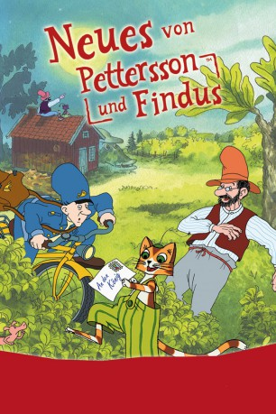

#9574 Neues von Pettersson und Findus
 
 IMDB-Wertung: 6.0 / 10
IMDB-Wertung: 6.0 / 10  Metascore: 0
Metascore: 0 
Findus soll endlich Ordnung halten! Pettersson, der sonst so großmütig auf alle Macken seines kleinen, haarigen Mitbewohners eingeht, ärgert das Chaos von Findus gewaltig. Der kleine Kater ist jedoch der Meinung, dass Katzen auf keinen Fall ordentlich sein müssen. Findus wendet sich mit seinem Anliegen per Brief an den König und bittet ihn um Mithilfe, Pettersson vom Gegenteil zu überzeugen. "Vielleicht kann der König das Aufräumen ja von Staats wegen verbieten" denkt sich der kleine Chaot. Der verrückte Postmann verspricht Findus hoch und heilig, den Brief ordnungsgemäß dem König zu überbringen. Während Findus auf eine Antwort wartet, bekommen er und Pettersson Besuch ... von einem coolen Tiger, Hühnern aus dem Weltall und einem längst vergessenen Verwandten...
Jahr: 2000
Dauer: 78 Minuten
FSK: 0
Land: Schweden Studio: MFA+ FilmdistributionTonspuren:
Untertitel:
Auflösung: SD (608x368) Größe: 688 MB
Genre: Animation/Trick, Familie
Regisseur: Torbjörn Jansson, Albert Hanan Kaminski, Árpád Szabó
Drehbuch: Torbjörn Jansson, Sven Nordqvist
Soundtrack: Komeda, Jochen Schmidt-Hambrock
Darsteller:
- Tord Peterson als Pettson
- Mona Seilitz als Prillan
- Meta Velander als Elsa
- Thomas Petersson als Brevbäraren
- Lena Nyman als Fru Fellini
- Tommy Johnson als Tigern István
- Ingvar Kjellson als Kungen
 Pierre Lindstedt als Kort jägare
Pierre Lindstedt als Kort jägare- Kalle Lundberg als Findus
- Gunnar Uddén als Gustavsson
- Towa Carson als Gumman Andersson
- Lars Brandeby als Alfred
- Anders Öjebo als Lång jägare
- Ulf Synnerholm als Betjänten
- Torbjörn Jansson als Radioröst, Höna
- Christoffer Bro als Alfred
- Terese Damsholt als Fru Andersen
- Laura Jonasdottir als Findus
- Lars Knutzon als Gustavsen
- Per Pallesen als Peddersen
Datei: X:\Kinder Collections\Pettersson und Findus\Neues von Pettersson und Findus (2000, FSK0, 608x368).avi seit 12.09.2018
Festplatte: Kinder-Filme+Trick
 Es gibt insgesamt 8 Filme in der Gruppe 'Kinder Collections\Pettersson und Findus'
Es gibt insgesamt 8 Filme in der Gruppe 'Kinder Collections\Pettersson und Findus'